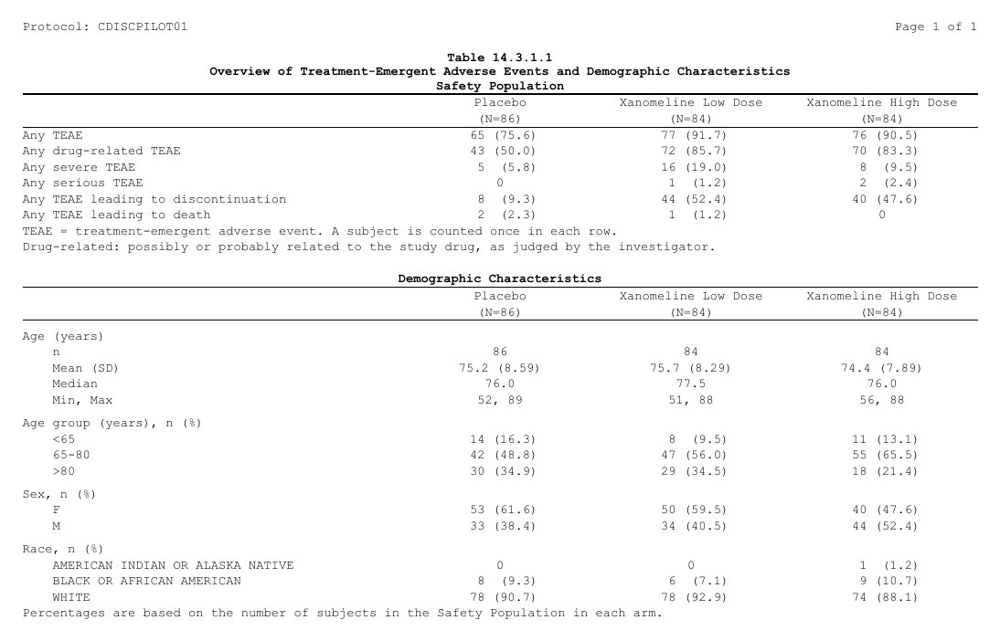
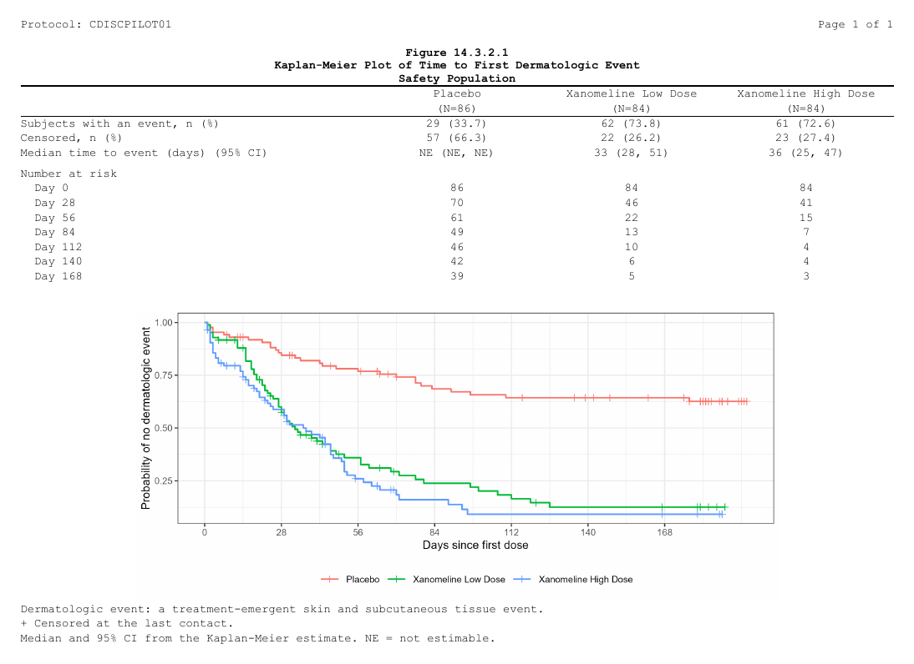
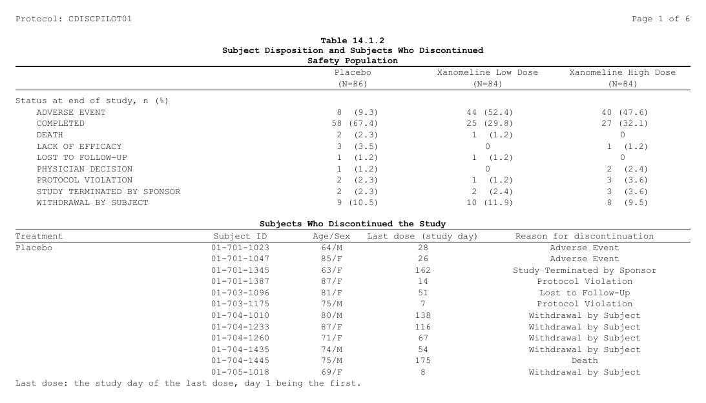
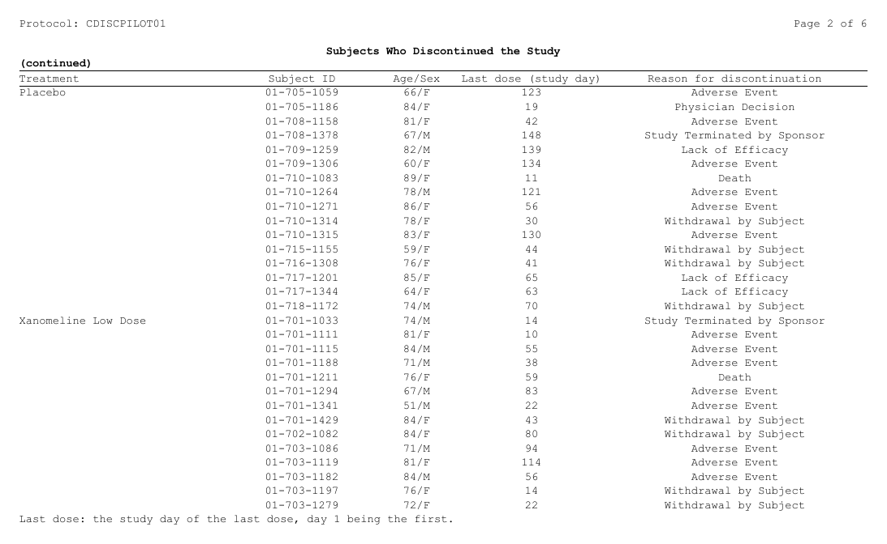
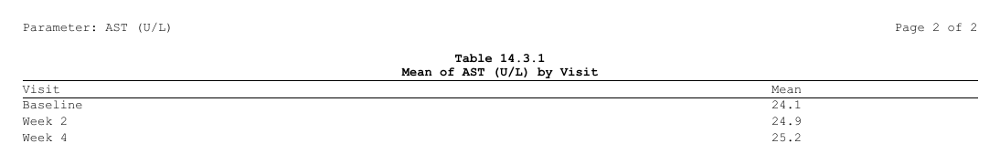

A report often puts two contents on one page: a summary table and the
listing behind it, a table and its figure, two short tables. In
rtfreporter each rtf_tables() or rtf_figures()
call adds a content, and page_break = FALSE puts it under
the content before it instead of on a new page. This page shows three
such reports and the rules behind them.
The arguments
| Argument | Of | What it does |
|---|---|---|
page_break |
rtf_tables(), rtf_figures()
|
TRUE (the default): the content starts a page.
FALSE: it goes on under the content before it. |
space_before |
both | With page_break = FALSE, the empty lines between the
two. |
titles, footnotes
|
both | The content’s own title block (above it) and footnote block (under it). |
first_rows |
rtf_tables() |
With page_break = FALSE, the rows of the table that go
on the shared page. The rest is paginated as the table says (a plan’s
plan_paginate_rows()), each page with its title, column
header and footnote. |
cont_title |
rtf_tables() |
With first_rows, a line under the title of each later
page, such as "(continued)". |
The header and footer of the page
(rtf_section(header = , footer = )) are the page’s, not a
content’s: they print on every page whatever is on it.
Fitting the page is the program’s job. rtfreporter
does not measure the page. A content that does not fit is carried to the
next page by the reader (Word, LibreOffice), with no title, column
header or footnote there, and the page numbers written into the file
({PAGE} / {TOTAL_PAGES}) are then off. Count
what fits: make the first content short enough, give a figure its
height, and give a long table first_rows.
rtf_layout(), at the end of this page, shows the pages as
rtfreporter will write them.
(a) A table under a table
An overview of the treatment-emergent adverse events and, under it, the demographic characteristics of the same population: two ARDs and two plans, with one column header – the arm and its N – written once and used by both.
Show code
arms <- c("Placebo", "Xanomeline Low Dose", "Xanomeline High Dose")
adsl <- cards::ADSL[cards::ADSL$SAFFL == "Y", ]
adsl$ARM <- factor(adsl$ARM, levels = arms)
adae <- cards::ADAE[cards::ADAE$TRTEMFL == "Y", ]
# a subject-level flag for each row of the overview
had <- function(rows) adsl$USUBJID %in% adae$USUBJID[rows]
adsl$ANYAE <- had(TRUE)
adsl$RELAE <- had(adae$AEREL %in% c("POSSIBLE", "PROBABLE"))
adsl$SEVAE <- had(adae$AESEV == "SEVERE")
adsl$SERAE <- had(adae$AESER == "Y")
adsl$DISAE <- adsl$DSRAEFL %in% "Y"
adsl$DTHAE <- had(adae$AESDTH == "Y")
ard_ae <- cards::ard_tabulate_value(adsl, by = ARM,
variables = c(ANYAE, RELAE, SEVAE, SERAE, DISAE, DTHAE))
ard_dm <- cards::ard_stack(
adsl, .by = ARM,
cards::ard_summary(variables = AGE),
cards::ard_tabulate(variables = c(AGEGR1, SEX, RACE)))
# the column header both tables share: the arm and its N
arm_header <- rtf_col_header(c("", "{col}"), c("", "(N={n})"))
ae <- ard_ae |>
normalize_ard() |>
table_plan(cols = "ARM", rows = "variable") |>
plan_cells(c(n == 0 ~ "0", "{n:.0f} ({p:.1f%})"), notes = FALSE) |>
plan_labels(c(ANYAE = "Any TEAE", RELAE = "Any drug-related TEAE",
SEVAE = "Any severe TEAE", SERAE = "Any serious TEAE",
DISAE = "Any TEAE leading to discontinuation",
DTHAE = "Any TEAE leading to death")) |>
plan_col_header(values = list(n = TRUE), arm_header) |>
plan_hide("label") |>
plan_columns(widths = c(4, 2, 2, 2)) |>
plan_style(border = "tfl", align_count_pct = TRUE)
dm <- ard_dm |>
normalize_ard() |>
table_plan(cols = "ARM", rows = c(group = "variable")) |>
plan_cells(continuous = c("n" = "{N:.0f}", "Mean (SD)" = "{mean:.1f} ({sd:.2f})",
"Median" = "{median:.1f}", "Min, Max" = "{min:.0f}, {max:.0f}"),
categorical = c(n == 0 ~ "0", "{n:.0f} ({p:.1f%})"), notes = FALSE) |>
plan_labels(c(AGE = "Age (years)", AGEGR1 = "Age group (years), n (%)",
SEX = "Sex, n (%)", RACE = "Race, n (%)")) |>
plan_levels(AGEGR1 = c("<65", "65-80", ">80"), SEX = c("F", "M")) |>
plan_col_header(values = list(n = TRUE), arm_header) |>
plan_stub(name = "row_label") |>
plan_columns(widths = c(4, 2, 2, 2)) |>
plan_style(border = "tfl", align_count_pct = TRUE)The first rtf_tables() starts the page; the second, with
page_break = FALSE, goes on under it, one empty line
between them:
Show code
header <- rtf_header(list(c(l = "Protocol: CDISCPILOT01", r = "Page {PAGE} of {TOTAL_PAGES}")))
doc_a <- rtf_document() |>
rtf_section(header = header) |>
rtf_tables(ae, titles = list(c("Table 14.3.1.1",
"Overview of Treatment-Emergent Adverse Events and Demographic Characteristics",
"Safety Population")),
footnotes = list(c("TEAE = treatment-emergent adverse event. A subject is counted once in each row.",
"Drug-related: possibly or probably related to the study drug, as judged by the investigator."))) |>
rtf_tables(dm, page_break = FALSE, space_before = 1L,
titles = list("Demographic Characteristics"),
footnotes = list("Percentages are based on the number of subjects in the Safety Population in each arm."))
generate_rtfreport(doc_a, "a_table_table.rtf", overwrite = TRUE)
Each table keeps its own title and footnote. The output’s own title (the table number, its name and the population) is the first content’s title block; a footnote for the whole output is the last content’s footnote block, or the page footer when it is wanted on every page.
(b) A figure under a table
A Kaplan-Meier plot under its table: the events, the censored
subjects, the median time with its confidence interval, and the number
at risk at the plot’s ticks. The table is a plain data frame, made from
the survfit() fit the plot draws:
Show code
adtte <- cards::ADTTE[cards::ADTTE$PARAMCD == "TTDE", ]
adtte$TRTA <- factor(adtte$TRTA, levels = arms)
fit <- survival::survfit(survival::Surv(AVAL, 1 - CNSR) ~ TRTA, data = adtte)
s <- summary(fit)$table
q <- quantile(fit, probs = 0.5)
ne <- function(x) if (is.na(x)) "NE" else format(round(x))
days <- c(0, 28, 56, 84, 112, 140, 168)
at_risk <- matrix(summary(fit, times = days, extend = TRUE)$n.risk, ncol = length(arms))
km_tab <- data.frame(
Item = c("Subjects with an event, n (%)", "Censored, n (%)",
"Median time to event (days) (95% CI)", "Number at risk", paste0(" Day ", days)))
for (i in seq_along(arms)) {
n <- s[i, "records"]
e <- s[i, "events"]
km_tab[[arms[i]]] <- c(sprintf("%d (%.1f)", e, 100 * e / n),
sprintf("%d (%.1f)", n - e, 100 * (n - e) / n),
sprintf("%s (%s, %s)", ne(q$quantile[i]), ne(q$lower[i]), ne(q$upper[i])),
"", as.character(at_risk[, i]))
}
names(km_tab)[1] <- ""
km_table <- table_plan(km_tab) |>
plan_col_header(rtf_col_header(c("", arms), c("", sprintf("(N=%d)", s[, "records"])))) |>
plan_columns(widths = c(4, 2, 2, 2)) |>
plan_style(border = "tfl")rtf_figures() takes the same page_break and
space_before. Give the figure the height that is left on
the page:
Show code
library(ggplot2)
# the curves from `fit` above: a step from (0, 1) per arm, a + at each censoring
arm <- sub("^TRTA=", "", names(fit$strata))
km_df <- rbind(data.frame(time = 0, surv = 1, arm = arm, n.censor = 0),
data.frame(time = fit$time, surv = fit$surv,
arm = rep(arm, fit$strata), n.censor = fit$n.censor))
km_plot <- ggplot(km_df, aes(time, surv, colour = arm)) +
geom_step(linewidth = 0.6) +
geom_point(data = km_df[km_df$n.censor > 0, ], shape = 3, size = 1.5) +
scale_y_continuous(limits = c(0, 1)) +
scale_x_continuous(breaks = days) +
labs(x = "Days since first dose", y = "Probability of no dermatologic event") +
theme_bw(base_size = 9) +
theme(legend.position = "bottom", legend.title = element_blank())
doc_b <- rtf_document() |>
rtf_section(header = header) |>
rtf_tables(km_table, titles = list(c("Figure 14.3.2.1",
"Kaplan-Meier Plot of Time to First Dermatologic Event",
"Safety Population"))) |>
rtf_figures(km_plot, page_break = FALSE, space_before = 1L,
render_width = 7, render_height = 3.2,
footnotes = list(c("Dermatologic event: a treatment-emergent skin and subcutaneous tissue event.",
"+ Censored at the last contact.",
"Median and 95% CI from the Kaplan-Meier estimate. NE = not estimable.")))
generate_rtfreport(doc_b, "b_table_figure.rtf", overwrite = TRUE)
(c) A long listing that goes on
A disposition summary and, under it, the listing of the subjects who
discontinued: 144 subjects, far more than what is left under the
summary. The listing is a plain table, its columns as they print, named
as their headers. plan_row_group() prints the treatment on
its first row only (and again at the top of a page), and
plan_paginate_rows() makes pages of 30 rows:
Show code
ard_ds <- cards::ard_stack(adsl, .by = ARM, cards::ard_tabulate(variables = DCDECOD))
ds <- ard_ds |>
normalize_ard() |>
table_plan(cols = "ARM", rows = c(group = "variable")) |>
plan_cells(categorical = c(n == 0 ~ "0", "{n:.0f} ({p:.1f%})"), notes = FALSE) |>
plan_labels(c(DCDECOD = "Status at end of study, n (%)")) |>
plan_col_header(values = list(n = TRUE), arm_header) |>
plan_stub(name = "row_label") |>
plan_columns(widths = c(4, 2, 2, 2)) |>
plan_style(border = "tfl", align_count_pct = TRUE)
disc <- adsl[adsl$DCDECOD != "COMPLETED", ]
disc <- disc[order(disc$ARM, disc$USUBJID), ]
lst <- data.frame(Treatment = as.character(disc$ARM),
`Subject ID` = disc$USUBJID,
`Age/Sex` = paste0(disc$AGE, "/", disc$SEX),
`Last dose (study day)` = as.character(disc$TRTDUR),
`Reason for discontinuation` = tools::toTitleCase(tolower(disc$DCDECOD)),
check.names = FALSE)
disc_listing <- table_plan(lst) |>
plan_row_group(mode = "value", collapse = "Treatment", group_col = "Treatment") |>
plan_paginate_rows(max_rows = 30, split = "group_force") |>
plan_columns(widths = c(2.4, 1.6, 1, 1.6, 3)) |>
plan_style(border = "tfl")(plan_listing() and listing_spec() are for
listings whose records wrap over several lines, such as adverse events.
See Listings with a plan. A listing
whose summary shares its columns – a PK concentration listing with its
summary statistics under it – is one table, not two contents: see A listing and its summary in one table.)
first_rows says how many of the listing’s rows go on the
shared page; the rest goes on pages of its own, paginated by its plan,
each with the listing’s title, the cont_title line, the
column header and the footnote:
Show code
doc_d <- rtf_document() |>
rtf_section(header = header) |>
rtf_tables(ds, titles = list(c("Table 14.1.2",
"Subject Disposition and Subjects Who Discontinued",
"Safety Population"))) |>
rtf_tables(disc_listing, page_break = FALSE, space_before = 1L,
first_rows = 12L, cont_title = "(continued)",
titles = list("Subjects Who Discontinued the Study"),
footnotes = list("Last dose: the study day of the last dose, day 1 being the first."))
generate_rtfreport(doc_d, "c_listing.rtf", overwrite = TRUE)Page 1, the summary and the first 12 rows of the listing:

Page 2, where the listing goes on:

A footnote given to rtf_tables(footnotes = ) belongs to
that content and prints under it, on each of its pages; one wanted on
every page goes in the page footer.
Checking the pages: rtf_layout()
rtf_layout() lays the document out as
generate_rtfreport() will write it, without writing it: one
line per content on each page, with the rows of each table and the size
of each figure. Use it to count what goes on a page and to see where a
content is cut:
rtf_layout(doc_d)
#> rtf_pages: 7 blocks on 6 pages (letter landscape, 9 pt)
#> page 1 [sec 1] rtftable 10 rows title 3
#> + rtftable 12 rows (1/6) title 1 foot 1 space 1
#> page 2 rtftable 30 rows (2/6) title 2 foot 1
#> page 3 rtftable 30 rows (3/6) title 2 foot 1
#> page 4 rtftable 30 rows (4/6) title 2 foot 1
#> page 5 rtftable 30 rows (5/6) title 2 foot 1
#> page 6 rtftable 17 rows (6/6) title 2 foot 1The result is a list as well: rtf_layout(doc)$pages has
one entry per printed page, each with its segments (the
contents on it, top to bottom).
Sections on a page of several contents
rtf_tables(auto_section = TRUE) opens a section for each
named content, so each can have its own header and footer values. A page
has one header and one footer, so a page of several contents has one
section:
- the page takes the section of the first content on it that has one;
- a later content on the page with a different one gets a warning, and its section is not used: no page break is added for it;
- a page whose contents have none stays in the section before it.
Show code
df <- function(n) data.frame(Item = sprintf("Row %02d", seq_len(n)), N = seq_len(n))
doc_s <- rtf_document() |>
rtf_tables(list(Overview = df(3)), titles = "Table 1") |>
rtf_tables(list("Part B" = df(4)), titles = "Table 2", auto_section = TRUE,
page_break = FALSE)
rtf_layout(doc_s)#> rtf_pages: 2 blocks on 1 page (letter landscape, 9 pt)
#> page 1 [sec 1 "Part B"] Overview rtftable 3 rows title 1
#> + Part B rtftable 4 rows title 1The first table has no section, so the page takes “Part B” from the
second. Page breaks come only from page_break and the
tables’ own pagination.
A page’s values in titles and headers: {column}
A table cut into pages on a column –
as_rtftables(page_by = ), a plan’s
plan_paginate_group() – knows each page’s value of that
column. A title, footnote, header or footer writes
{<column name>} and gets that value:
Show code
lab <- data.frame(PARAM = rep(c("ALT (U/L)", "AST (U/L)"), each = 3),
Visit = rep(c("Baseline", "Week 2", "Week 4"), 2),
Mean = c(21.3, 22.0, 21.8, 24.1, 24.9, 25.2))
pages <- as_rtftables(lab, page_by = "PARAM", drop_cols = "PARAM")
doc_t <- rtf_document() |>
rtf_section(header = rtf_header(list(c(l = "Parameter: {PARAM}",
r = "Page {PAGE} of {TOTAL_PAGES}")))) |>
rtf_tables(pages, titles = list(c("Table 14.3.1", "Mean of {PARAM} by Visit")))
rtf_layout(doc_t)#> rtf_pages: 2 blocks on 2 pages (letter landscape, 9 pt)
#> page 1 [sec 1] ALT (U/L) rtftable 3 rows title 2
#> page 2 AST (U/L) rtftable 3 rows title 2
rtf_layout(doc_t)$pages[[2]]$values # the values of page 2
#> PARAM
#> "AST (U/L)"
generate_rtfreport(doc_t, "t_tokens.rtf", overwrite = TRUE)
On a page of several contents, a title or footnote takes the value of
its own table, so each names its own. The header and footer belong to
the page: each column takes the value of the first table on the page
that has one, and a later table with another value gets a warning (the
rule of the sections above). A {NAME} the page has no value
for prints as written; rtfreporter’s own tokens ({PAGE},
{PROGRAM}, …) and those given to
rtf_document(tokens = ) win over a column of the same
name.
Where next
- Titles, footnotes and several tables — the title and footnote blocks, and styling them
- Headers, footers and tokens — the page’s own bands and the tokens they take
-
Splitting a report into
sections — sections and
auto_section - Listings with a plan — listings whose records wrap